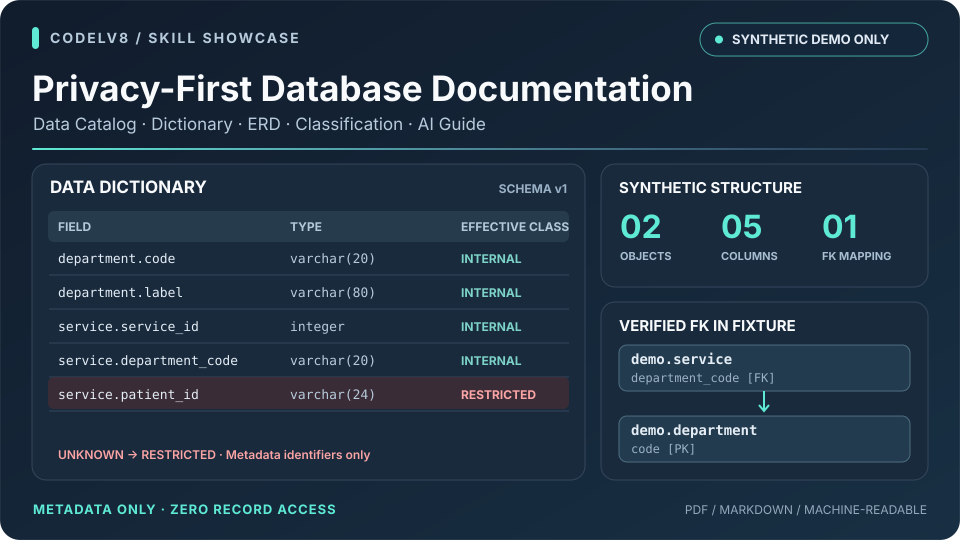

Data Catalog
บัญชีวัตถุฐานข้อมูลและขอบเขต
ตัวอย่างจากการรันตัวสร้างเอกสาร v2.0 ด้วย Synthetic Metadata

จาก metadata-template.json ที่ระบุสถานะ template; ไม่มีค่าใน Record
| Object | Field | Data type | Nullable | Key | Effective class |
|---|---|---|---|---|---|
| demo.department | code | varchar(20) | No | PK | Internal |
| demo.department | label | varchar(80) | Yes | — | Internal |
| demo.service | service_id | integer (10,0) | No | PK | Internal |
| demo.service | department_code | varchar(20) | No | FK | Internal |
| demo.service | patient_id | varchar(24) | Unknown | — | Unknown → Restricted |
demo.service.department_code [FK] ──→ demo.department.code [PK]
แสดงเฉพาะ FK ที่ระบุใน fixture ไม่อนุมาน cardinality หรือ lineage
PDF เรนเดอร์จาก Markdown ในขั้นตอน Build ของ GitHub Pages หากใช้งานจาก clone แบบ offline ให้สร้างไฟล์ PDF ด้วยคำสั่งในส่วนท้ายก่อนเปิดลิงก์ PDF
บัญชีวัตถุฐานข้อมูลและขอบเขต
ชนิดข้อมูล คีย์ ความหมาย และ Classification
FK mapping ที่ยืนยันในชุดสมมุติ
Unknown → Restricted
แสดงข้อจำกัดเมื่อไม่มี mapping
คู่มืออ่านและตีความ Metadata
ข้อกำหนดและขอบเขตสำหรับ LLM
รันจาก root ของ repository ด้วย Python และ dependency สำหรับ PDF ที่ระบุใน README ของคลัง Skill ไม่ต้องเชื่อมต่อฐานข้อมูลหรือ API
python scripts/build-documentation-examples.py
การตรวจแบบอัตโนมัติเป็นมาตรการเสริม ต้องตรวจความปลอดภัยและขอบเขตด้วยตนเองก่อนใช้กับข้อมูลจริง
อ่าน SKILL.md